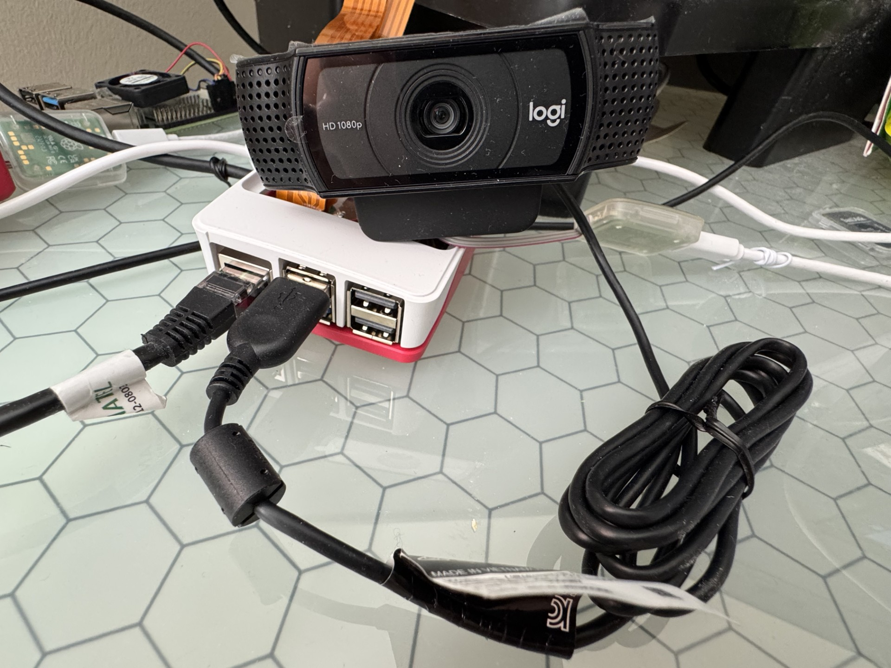
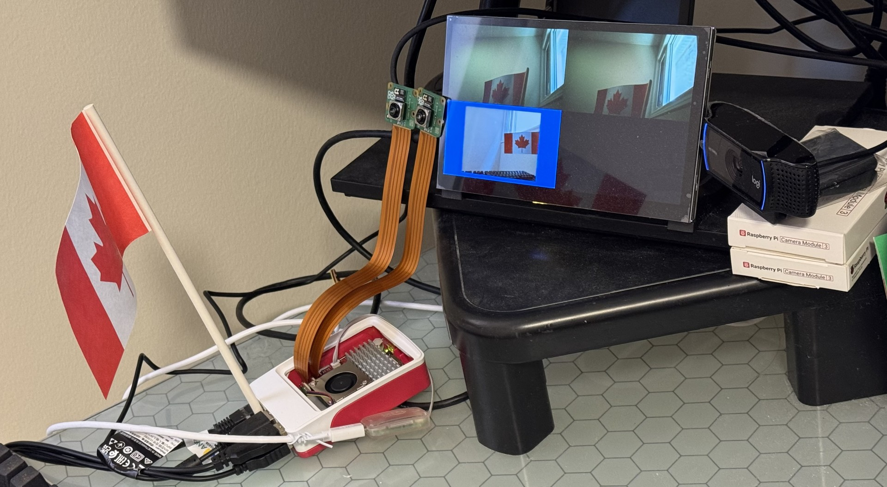

This codelab describes how to configure multiple camera sources on the Raspberry Pi 5. The instructions provided enable support for multiple camera inputs.
Hardware
- 1 x Raspberry Pi 5
- 2 x Camera Module 3
- 1 x Logitech C920x (or C920)
Quick Start Target Image (QSTI)
- On the host, launch QNX Software Center and install the QSTI image for QNX 8.0, for example: com.qnx.qnx800.quickstart.rpi5/0.5.0.00319T202605190151L
- Use Raspberry Pi Imager or another imaging tool to write the image to the SD card.
- Insert the SD card into the Raspberry Pi 5 and plug in the power supply.
Dependent packages
Install the following packages
sudo apk add \
yaml \
libturbojpeg \
qnx-egl \
qnx-gles \
qnx-screen \
qnx-devu-hcd-dwc3-xhci \
qnx-sensor-framework-rpi-camera-ipa \
qnx-io-usb-otg \
qnx-usb \
qnx-multimedia-framework \
qnx-sensor-framework \
qnx-sensor-framework-camera-imx708 \
qnx-sensor-framework-rpi5 \
qnx-sensor-framework-utils
Connect two Camera Module 3 units to the DISP0 and DISP1 ports as follows:

Connect Logitech C920x (or C920) to one of the USB ports as follows:

Enable 2 Camera Modules
To enable 2 camera modules, we need to
- Enable IRQ 11, 13, 47, 48 with
msix-rp1andgpio-rp1 - Enable i2c4 and i2c6 with
i2c-dwc-rpi5 - Enable
sensorat startup withrpi5_camera_module3.conf
To achieve this:
- Log in as
root
sudo su -
- Backup
/usr/etc/startup/post_startup.sh
cp -p /usr/etc/startup/post_startup.sh /usr/etc/startup/post_startup.sh.org
- apply the following patch,
post_startup.sh.diff, and restart
cd /usr/etc/startup
patch -p1 -i post_startup.sh.diff
The patch, post_startup.sh.diff, is as follows:
diff --git a/post_startup.sh b/post_startup.sh
index eecdafa..6c0a345 100755
--- a/post_startup.sh
+++ b/post_startup.sh
@@ -141,7 +141,14 @@ io-snd -c /system/etc/system/config/sound/io_snd.conf
echo '---> Initializing camera support...'
# i2c6 is used by camera
# Enable RP1 MSIX I2C6/MIPI0/MIPI1 interrupts
-msix-rp1 --mode=config 13lll,47,48
+msix-rp1 --mode=config 11lll,13lll,47,48
+
+gpio-rp1 set 40 a2 pu
+gpio-rp1 set 41 a2 pu
+/system/bin/i2c-dwc-rpi5 -p0x1f00080000 -c200000000 -q0xab --u4
+waitfor /dev/i2c4
+
+
gpio-rp1 set 38 a3 pu
gpio-rp1 set 39 a3 pu
/system/bin/i2c-dwc-rpi5 -p0x1f00088000 -c200000000 -q0xad --u6
@@ -152,6 +159,7 @@ fi
# Enable CSI2 PiSP Frontend
gpio-rp1 set 34 op dh pd
+gpio-rp1 set 46 op dh pd
if [ -d /dev/screen ]; then
echo '---> Starting sensor framework...'
@@ -175,7 +183,7 @@ if [ -d /dev/screen ]; then
#sensor -U 521:521 -r /data/share/sensor -c /system/etc/config/sensor/u3v_camera.conf
# Simulator camera i.e. color bars
- sensor -U 521:521 -b external -r /data/share/sensor -c /system/etc/config/sensor/sensor_demo.conf
+ #sensor -U 521:521 -b external -r /data/share/sensor -c /system/etc/config/sensor/sensor_demo.conf
# Intel D435 depth camera - z16 depth map and ycbycr color image
#sensor -U 521:521 -r /data/share/sensor -c /system/etc/config/sensor/d435_z16_ycbycr.conf
@@ -183,10 +191,16 @@ if [ -d /dev/screen ]; then
# Intel D435 depth camera - rgb565 depth map image and ycbycr color image
#sensor -U 521:521 -r /data/share/sensor -c /system/etc/config/sensor/d435_rgb565_ycbycr.conf
+ sensor -U 521:521 -b external -r /data/share/sensor -c /system/etc/config/sensor/rpi5_camera_module3.conf
+
waitfor /dev/sensor/camera1
if [ $? -ne 0 ]; then
echo '---> waitfor /dev/sensor/camera1 failed.'
fi
+ waitfor /dev/sensor/camera2
+ if [ $? -ne 0 ]; then
+ echo '---> waitfor /dev/sensor/camera2 failed.'
+ fi
else
echo '---> Error Screen not available. Sensor framework will not be started.'
fi
Enable Logitech C920x (or C920) as the third camera
To enable Logitech C920x in addition to the two Camera Module 3 units,
- Duplicate
/usr/etc/config/sensor/rpi5_camera_module3.confto/usr/etc/config/sensor/usb_and_cam3.conf
cp /usr/etc/config/sensor/rpi5_camera_module3.conf /usr/etc/config/sensor/usb_and_cam3.conf
- apply the following patch,
usb_and_cam3.conf.diff,
cd /usr/etc/config/sensor
patch -p1 -i usb_and_cam3.conf.diff
- The patch,
usb_and_cam3.conf.diff, is as follows:
diff --git a/usb_and_cam3.conf b/usb_and_cam3.conf
index b693684..8e17101 100644
--- a/usb_and_cam3.conf
+++ b/usb_and_cam3.conf
@@ -27,6 +27,24 @@ begin SENSOR_UNIT_2
algorithm_config = /usr/etc/config/sensor/rpi5_algorithm_imx708.json, imx708
end SENSOR_UNIT_2
+begin SENSOR_UNIT_3
+ type = usb_camera
+ name = front-camera
+ position = 0, 0, 0
+ direction = 0, 0, 0
+ default_video_framerate = 30
+ address = /dev/usb/io-usb-otg, -1, -1, -1, -1
+end SENSOR_UNIT_3
+
begin INTERIM_DATA_UNIT_1
num_buffers = 5
buffer_size = 8096
- Modify
/usr/etc/startup/post_startup.shto- point to
/usr/etc/config/sensor/usb_and_cam3.conf - wait for
/dev/sensor/camera3
- point to
...
sensor -U 521:521 -b external -r /data/share/sensor -c /system/etc/config/sensor/usb_and_cam3.conf
...
waitfor /dev/sensor/camera1
if [ $? -ne 0 ]; then
echo '---> waitfor /dev/sensor/camera1 failed.'
fi
waitfor /dev/sensor/camera2
if [ $? -ne 0 ]; then
echo '---> waitfor /dev/sensor/camera2 failed.'
fi
waitfor /dev/sensor/camera3
if [ $? -ne 0 ]; then
echo '---> waitfor /dev/sensor/camera3 failed.'
fi
else
...
Ensure login as root
[qnxuser@qnxpi ~]$ sudo su -
[sudo] password for qnxuser:
Validate sensor service is up and running
run pidin ar | grep sensor
The output will be as follows:
[root@qnxpi ~]# pidin ar | grep sensor
913444 sensor -U 521:521 -b external -r /data/share/sensor -c /system/etc/config/sensor/rpi5_camera_module3.conf
If Logitech C920x (or C920) was also enabled as the third camera, the output will be as follows:
[root@qnxpi ~]# pidin ar | grep sensor
913444 sensor -U 521:521 -b external -r /data/share/sensor -c /system/etc/config/sensor/usb_and_cam3.conf
Validate that i2c are configured properly at -q0xab and -q0xad, with i2c-dwc-rpi5
[root@qnxpi ~]# pidin ar | grep i2c-dwc-rpi5
671765 /system/bin/i2c-dwc-rpi5 -p0x1f00074000 -c200000000 -q0xa8
856098 /system/bin/i2c-dwc-rpi5 -p0x1f00080000 -c200000000 -q0xab
884771 /system/bin/i2c-dwc-rpi5 -p0x1f00088000 -c200000000 -q0xad
Ensure camera sensors are enabled
run ls -al /dev/sensor
The output will be as follows:
[root@qnxpi ~]# ls -al /dev/sensor
total 0
-rw-rw---- 1 521 sensor 0 1970-01-01 00:00 camera1
-rw-rw---- 1 521 sensor 0 1970-01-01 00:00 camera2
-rw-rw---- 1 521 sensor 0 1970-01-01 02:20 data1
-rw-rw---- 1 521 sensor 0 1970-01-01 02:20 data2
If a Logitech C920x (or C920) is also enabled as a third camera, the output will be as follows:
[root@qnxpi ~]# ls -al /dev/sensor
total 0
-rw-rw---- 1 521 sensor 0 1970-01-01 00:00 camera1
-rw-rw---- 1 521 sensor 0 1970-01-01 00:00 camera2
-rw-rw---- 1 521 sensor 0 1970-01-01 00:00 camera3
-rw-rw---- 1 521 sensor 0 1970-01-01 02:20 data1
-rw-rw---- 1 521 sensor 0 1970-01-01 02:20 data2
Validate the IRQs are enabled for the two Camera Module 3 units
run msix-rp1
The output will be as follows:
[root@qnxpi ~]# msix-rp1
Interrupt Configuration and Status
...
11 | I2C4 | -EI | **-Ml | *l
...
13 | I2C6 | -EI | **-Ml | *l
...
47 | MIPI0 | -EI | ---Me | -e
48 | MIPI1 | -EI | ---Me | -e
...
Run camera_example3_viewfinder -u N, where N is the camera number
[root@qnxpi ~]# camera_example3_viewfinder -u 1 &
[root@qnxpi ~]# camera_example3_viewfinder -u 2 &
If Logitech C920x (or C920) was also enabled as third camera, run following as well
[root@qnxpi ~]# camera_example3_viewfinder -u 3 &
Switch between cameras
If a USB keyboard is attached to RPI5, you can press Alt + Tab to switch between the cameras.
Multiplex the cameras
The cameras can be multiplexed at the same time using camera_mux -n N, where N is the total number of cameras to be multiplexed.
However, currently the fullscreen-winmgr process restricts this.
We need to stop the fullscreen-winmgr service before multiplexing the camera streams.
slay fullscreen-winmgr
camera_mux -n 2
If Logitech C920x (or C920) was also enabled as a third camera, run
camera_mux -n 3
The following is the moment when three cameras are multipexed

Validate that the two Camera Module 3 units are detected
Run slog2info -b sensor_service You will find similar output as follows:
...
Jan 01 00:00:11.249 sensor_service.913444 info 0 int main(int, char**)(620): Initializing of platform completed
Jan 01 00:00:11.249 sensor_service.913444 debug 1 [ext]int getResolutions(platform_external_handle_t, sensor_unit_t, camera_frametype_t, int*, const camera_res_t**)(945): Camera 1: 2 resolutions for type 1
Jan 01 00:00:11.249 sensor_service.913444 debug 1 [ext]int getFramerates(platform_external_handle_t, sensor_unit_t, camera_res_t*, camera_frametype_t, int*, bool*, float*)(989): Camera 1: rates 1, type 1, resolution 2304 x 1296 maxmin 0
...
Jan 01 00:00:11.250 sensor_service.913444 debug 1 [ext]int getResolutions(platform_external_handle_t, sensor_unit_t, camera_frametype_t, int*, const camera_res_t**)(945): Camera 2: 2 resolutions for type 1
Jan 01 00:00:11.250 sensor_service.913444 debug 1 [ext]int getFramerates(platform_external_handle_t, sensor_unit_t, camera_res_t*, camera_frametype_t, int*, bool*, float*)(989): Camera 2: rates 1, type 1, resolution 2304 x 1296 maxmin 0
...
If the Camera Module 3 is not detected, inspect the ribbon cables to ensure they are firmly connected to the Raspberry Pi 5 ports.
Validate that the Logitech camera is detected
Run usb or usb -vvv if more details are required.
You will find similar output as follows:
...
USB 1 (XHCI) v10.00, v1.01 DDK, v2.00 HCD, DLL: Active
Device Address : 1
Vendor : 0x046d (Logitech)
Product : 0x08e5 (HD Pro Webcam C920)
Class : 0xef (Miscellaneous)
Subclass : 0x02
Protocol : 0x01
...